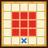

| Lv: | 140 |
|---|---|
| HP: | |
| MP: | |
| ATK: | |
| DEF: | |
| AGL: | |
| WIS: | |
| Move: | |
| Weight: | 65 |
| Weaknesses: |  |
 |
/ |  |
 |
|---|---|---|---|---|---|
| Resistances: |  |
 |
/ |  |
 |
| Immunities: |  |
Note: All perks/abilities denoted with an * are using unofficial translations
| Abilities | ||||||
|---|---|---|---|---|---|---|
| Level | Type | Name | MP | Element | Range | Description |
| 1 |  |
Kafuddle | 16 |  |
 Front |
Occasionally confuses all enemies in area of effect |
| 33 |  |
Madding Cloud | 80 | |
 Front |
Nullifies Self HP Healing Effects for all enemies in area of effect for 3 turns This attack cannot be redirected by abilities or perks such as Cover or Selflessness (Times usable: 1) |
| 54 |  |
Absolute Frost* 絶対凍土 |
156 |  |
 Front |
Deals major unreflectable Crack-type spell damage to all enemies in area of effect, often curses |
| 80 | |
Wyrm Flare* ウルフレア |
124 |  |
 2-4 |
Deals major Sizz-type spell damage to 1 enemy, greatly lowers Self HP Healing Effects for 3 turns |
| Base Perks | ||
|---|---|---|
| Level | Name | Description |
| 1 | Max HP +30 | Raises max HP by 30 |
| 1 | WIS +15 | Raises max WIS by 15 |
| 1 | Creepy Incantation* ぶきみな呪文 |
Action start: Summons Mordegon's Staff A and Mordegon's Staff B, 1 time per battle Note: If another party member has already activated a perk that summons units, then this perk will fail |
| 1 | Malevolent Mage* 邪悪な魔道士 |
Battle start: Raises DEF, AGL, WIS, Move, and reduces damage taken by 20% for 3 turns |
| 110, 120, 130, 140 | Absolute Frost* potency +2% | Raises Absolute Frost* potency by 2% |
| 110, 120, 130, 140 | Wyrm Flare* potency +2% | Raises Wyrm Flare* potency by 2% |
| Awakening Perks | ||
|---|---|---|
| Awakening | Name | Description |
| 1 | Impostor King* 偽りの王 |
Heals 50% of max HP when the user's HP drops to 70% or less, up to 2 times per battle This perk can be triggered when the attack is from an ally |
| 2 | Zam Res +25 | Raises Zam resistance by 25 |
| 3 | Malevolent Protection* 邪悪なる加護 |
Battle start, action start, or when revived: Removes some status ailments if the user's HP is 70% or over |
| 3, 5 | Absolute Frost* potency +5% | Raises Absolute Frost* potency by 5% |
| 3, 5 | Wyrm Flare* potency +5% | Raises Wyrm Flare* potency by 5% |
| 4 | Frizz Res +25 | Raises Frizz resistance by 25 |
| 5 | Spell Tricks | Lowers spell ability MP cost by 10%, raises potency and recovery by 10% |
| 1, 2, 3, 4, 5 | Stats Up | Raises HP, MP, ATK, DEF, WIS and AGL by 5% |